Look n°6
Chambre cosy violette d'hiver
Une grande chambre douce qui s'illumine le soir : halo LED autour de la tête de lit, lampes à pampilles lilas, glycine en cascade à la fenêtre et touches de violet sur le lit. Voici les articles pour recréer ce look chez toi, même en commençant par la tête de lit et les lampes.
Prix au 26/10/2026
-
Lit rembourré à tête de lit cannelée, tissu teddy beige
Couchage 140 × 190 cm (matelas non fourni), sommier à lattes inclus. 194 × 148 cm, tête de lit cannelée de 114 cm, réglable en hauteur. Attention : sur le vrai modèle, la tête de lit est arrondie au centre puis redescend en vague, avec des coins en pointe sur les côtés ; sur l'image, elle forme une arche entièrement arrondie.
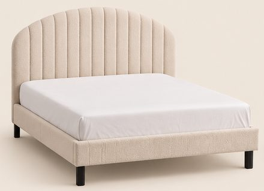
-
Housse de couette en gaze de coton blanc cassé
140 × 200 cm avec 1 taie 65 × 65 cm, gaze légère et froissée. Sur l'image, la couette paraît plus épaisse et matelassée.
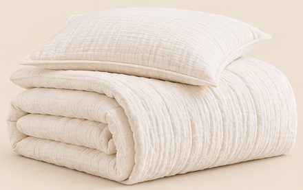
-
Coussins en velours violet et en fausse fourrure crème
Housses seules (garnitures non fournies) : lot de 2 en velours violet 30 × 50 cm et lot de 2 en fausse fourrure crème à vagues 40 × 40 cm.
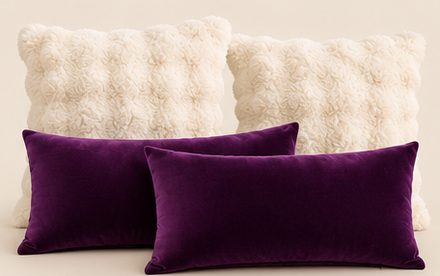
-
Plaid violet à chevrons
Flanelle douce 150 × 200 cm, chevrons en relief. Sur l'image, il apparaît deux fois (sur le fauteuil et sur le lit) et ressemble à un tricot plus épais.
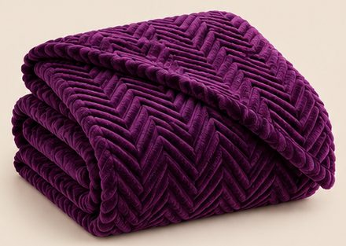
-
Tables de chevet blanches à niche en arche, lot de 2
40 × 30 × 60 cm, une niche ouverte en haut et une niche en arche en bas. Les deux chevets sont fournis.
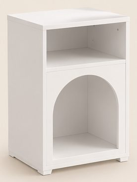
59,90 € les 2Voir sur Amazon -
Lampe de chevet à pampilles de cristal lilas
45 cm de haut, allumage tactile, ports USB, ampoule incluse. Il en faut 2 pour refaire la photo (une par chevet).
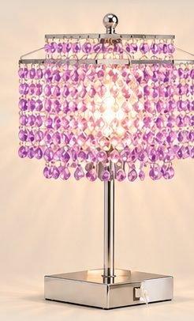
38,66 €Voir sur Amazon -
Banc coffre bout de lit en velours beige
133 × 47 × 55 cm, capitonné, accoudoirs arrondis, coffre de rangement.
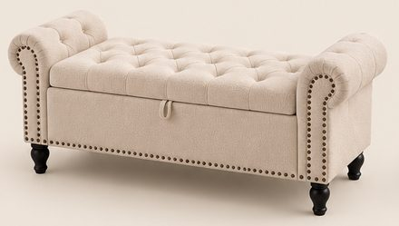
149,99 €Voir sur Amazon -
Fauteuil pouf en fausse fourrure crème
75 × 65 × 70 cm, forme de fleur, rembourrage en mousse.
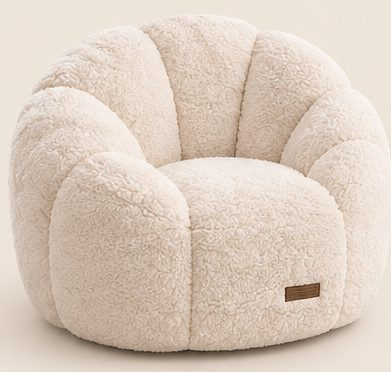
79,90 €Voir sur Amazon -
Tapis à poils longs ivoire 160 × 230
Très moelleux, lavable, antidérapant.
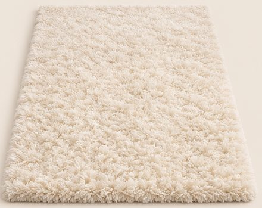
57,99 €Voir sur Amazon -
Plafonnier LED blanc à cadres
80 × 45 cm, lumière réglable de 3000 à 6000 K, télécommande. Les cadres du vrai modèle sont plus allongés que sur l'image.
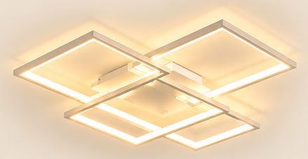
-
Ruban LED COB blanc chaud 5 m
Ligne de lumière continue (sans points), 3000 K, variateur et télécommande. Compte 2 à 3 rouleaux pour éclairer la tête de lit, le dessous du lit et le plafond comme sur la photo.
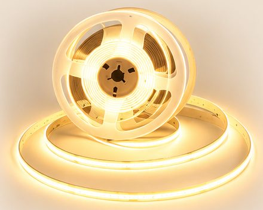
29,99 €Voir sur Amazon -
Vase ondulé crème et hortensias violets
Vase en céramique mat de 17 cm aux bords ondulés ; hortensias artificiels violet clair de 45 cm, lot de 3.
-
Glycine violette et guirlande lumineuse
12 guirlandes de glycine artificielle de 1 m ; guirlande à micro-LED blanc chaud sur fil de cuivre, à piles, lot de 2 × 10 m, à mêler à la glycine.
-
Olivier artificiel 120 cm
En pot, prêt à poser, feuillage réaliste.
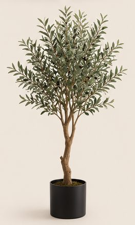
54,13 €Voir sur Amazon
Enregistrer ce look sur Pinterest
Image d'inspiration générée par IA. Prix indicatifs, revérifiés toutes les deux semaines.